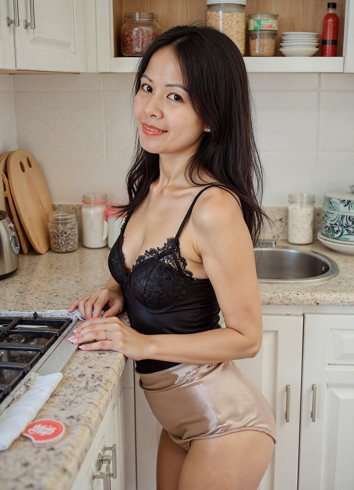

Your Domestic Helper

Every morning starts with a gentle touch—Joyce prepares your breakfast with elegance in lace.

The warmth of her morning smile blends with the crispness of fresh apples—simple moments, beautifully lived.

A pause at the counter, a glance that says she’s not just preparing food, she’s preparing love.

Focused and graceful, she bends to stir the pot—every movement part of a silent morning ballet.

Even in a swimsuit, her poise remains—Joyce in leisure mode, still your attentive kitchen muse.

A dash of herbs, a splash of grace—Joyce’s hands speak the language of flavor and affection.

With a playful smile, she stirs the bowl—your evening helper in satin, adding delight to every meal.

The kitchen is her haven, and she moves like poetry through it—plating warmth with each dish.

The quiet intensity of her gaze as she cooks—this is passion disguised as routine, elegance in black silk.